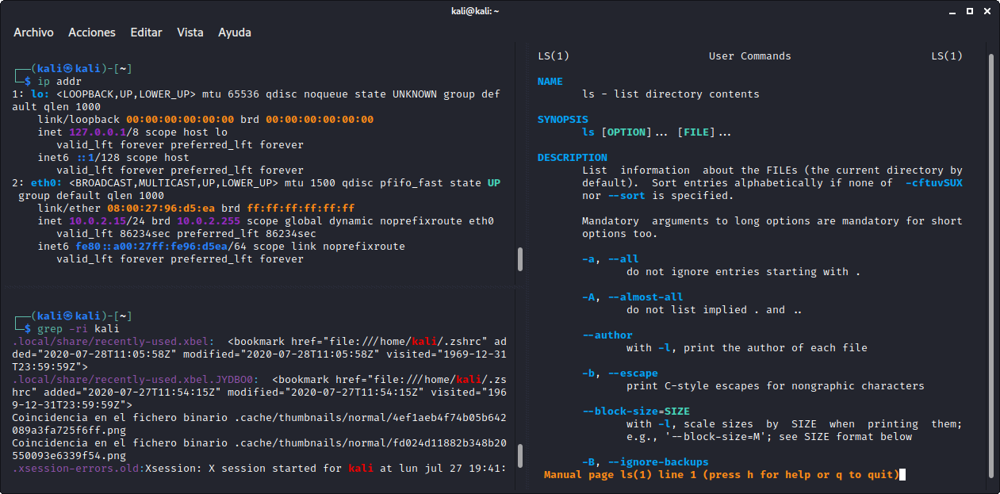

Kali Linux es una distribución de Linux especializada en seguridad informática, por lo que un curso de Kali Linux generalmente cubre una amplia variedad de herramientas y técnicas de seguridad informática. Algunas de las herramientas más comunes que se ven en un curso de Kali Linux incluyen Nmap para la exploración de redes, Metasploit para pruebas de penetración, Wireshark para el análisis de tráfico de red, Aircrack-ng para la auditoría de redes inalámbricas, John the Ripper para la recuperación de contraseñas, Hydra para ataques de fuerza bruta, y muchos otros. Además, los estudiantes pueden aprender cómo utilizar las herramientas de Kali Linux para realizar pruebas de penetración éticas, auditorías de seguridad, análisis forense, y otras tareas de seguridad informática.
Un curso de seguridad informática típicamente cubre una variedad de temas, como los principios básicos de la seguridad informática, las amenazas y los riesgos comunes de seguridad, los sistemas operativos y las redes informáticas, los protocolos y herramientas de seguridad, la criptografía, la autenticación y la gestión de identidades, la gestión de riesgos y el cumplimiento normativo, la gestión de incidentes y la respuesta a emergencias, entre otros. Además, los cursos pueden incluir ejercicios prácticos y laboratorios para desarrollar habilidades técnicas y de pensamiento crítico, así como estudios de casos para analizar y resolver problemas de seguridad informática reales.
Varias ventajas de estudiar seguridad informática, incluyendo: